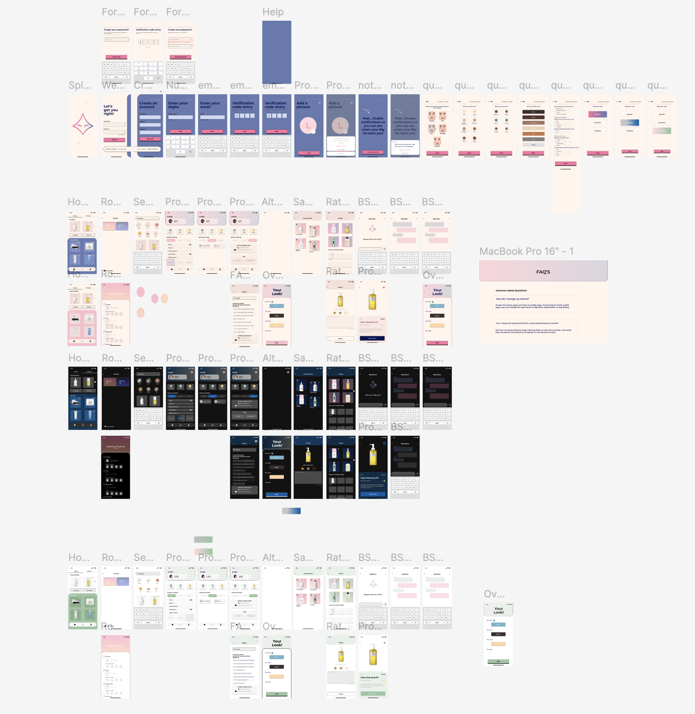

Gemo · College Connection App
Designed the user interface in Figma and engineered the backend with Firebase and Firestore for real-time student pairing. Created visual identity, flow, and data structure.

Click image to open interactive prototype in Figma
Big Sister Bot · Skincare Recommender
Collaborated on UI/UX and layout for a skincare recommendation app using user data for personalized suggestions. Designed icons, color palette, and user flow.


Click “Next” to toggle between wireframe and final mockup
Card-Based Game Engine
Developing a custom game engine in LWJGL for a narrative-driven card game. Handling design, gameplay logic, and story integration. Currently in design phase.